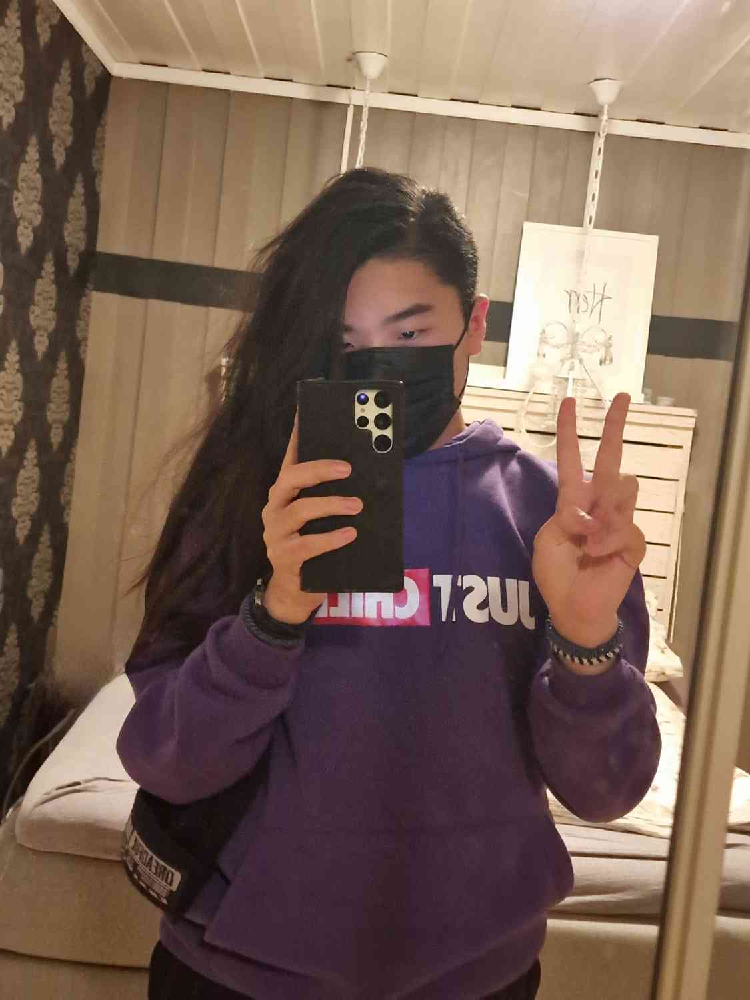

Om Meg

Howdy! Jeg er Dan Andreo.
Jeg er en programmering og gaminginteressert nerd fra Brumunddal, Norge.
Jeg er en programmering og gaminginteressert nerd fra Brumunddal, Norge.
"CHAOS! CHAOS!" - Jevil, Deltarune
Ved siden av programmering, så prøver jeg og lære musikkproduksjon med Ableton.